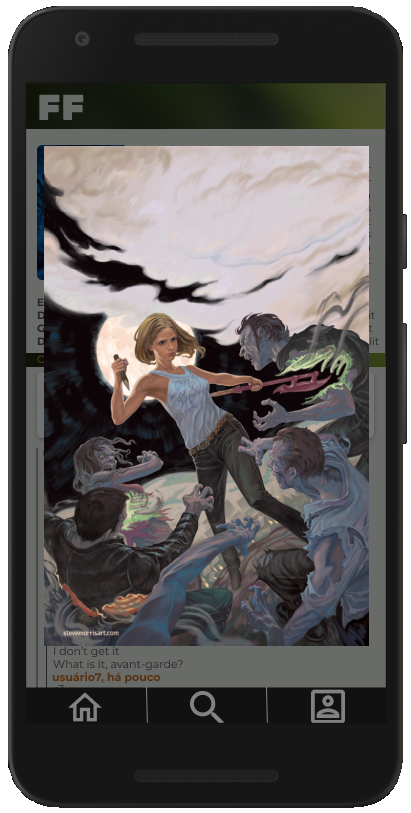

comunidades dedicadas a suas séries favoritas
debata, descubra e compartilhe
Converse com outros fãs sobre seus momentos favoritos!
Interaja com a comunidade
Crie e descubra fanarts, fanfics e muito mais

A partir dos seus interesses receba recomendações perfeitas para você